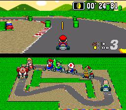

Super Mario Kart es un videojuego de carreras diseñado por Nintendo EAD y editado para la videoconsola Super Nintendo en 1992. El juego innovador inauguró el género de carreras alocadas. Además presentaba unos gráficos avanzados para su época debido al uso del Modo 7 para el mapeado de texturas. 
Como indica su nombre, los vehículos son karts, aunque el juego no fue creado por su realismo, el kart posiblemente fue el vehículo más apropiado basado para crear un juego desenfadado, en donde no hay reglas y en donde se vale de todo tipo de objetos mágicos repotenciadores o usados como arma o para estorbar e impedir que el rival llegue antes a la meta. Tuvo muchas criticas positivas como GamePro que le dio un 100 mientras que Nintendo Power un 86. Vendió 8,76 millones de copias. El gran éxito que tuvo hizo que en las siguientes consolas de Nintendo tuvieran una versión de Mario Kart.